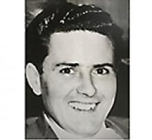

BORN: SEP 28, 1932
DATE OF PASSING: JUL 14, 2017
It is with broken hearts that we announce that Roger Ryplanski, our beloved husband, our father and our grandfather, passed away unexpectedly but peacefully, at home surrounded by his devoted family, on July 14, 2017.
Roger was born on September 28, 1932 in Winnipeg Manitoba; he was the youngest of three children born to Paul and Pauline Ryplanski.
He was predeceased by his parents, his brother Paul, sister-in-law Ina, his sister Helen, and half-sister Stephanie.
Left to cherish his memory are May, his loving wife of 55 years, his four children: Rick (Lisa) Ryplanski, Kim (Pat) Kummen, Derek (Vanessa) Ryplanski and Krystal (Jason) Kemp, and his nine grandchildren Rebecca Kummen, Blake Kummen, Wade Ryplanski, Jena Ryplanski, Jackson Kemp, Ben Kemp, Calvin Kemp, Kyla Ryplanski and Max Kummen.
Roger grew up in Pinawa Manitoba, where he enjoyed various outdoor activities: hunting with his dog Sandy, as well as fishing and many different sports. Roger attended grade school in Pinawa and he lived in Casey's Inn as a youth to attend high school in Lac du Bonnet.
Roger moved to Winnipeg in 1951, where a few years later he met May and they were married in 1962. Roger worked in all things automotive: as an ambulance driver, taxi driver, auto mechanic and owner of a Shell service station, automotive parts and service sales, owner/operator of a Turbo gas bar, and finally working for Fast Air until he retired.
Roger loved vegetable gardening; he always had the best crop of tomatoes, even planting some in May's flower gardens. He loved summer holidays with the family which typically entailed a driving holiday travelling in a station wagon full of kids and the family dog that he would never leave behind.
After the kids grew up, Roger and May enjoyed travelling to Mexico, Hawaii and to destinations all over the U.S. and Canada vacationing and visiting family and friends. When his kids were young, Roger was involved in community sports, always volunteering to coach, manage or help out with any and all of his kids' teams. When the grandchildren came along, Roger could always be found in the cheering section; he rarely missed attending an event, game or recital for his grandkids.
Roger cherished his wife and family; he loved the chaos of our large family dinners and holidays with all the kids and grandkids.
Roger was proud of all of his children and grandchildren for their respective accomplishments whether it was in school, sports or their personal lives; nothing made him more proud than his family. We will dearly miss his endless stories, sense of humour, stubbornness, gentle heart and kind soul, and positive attitude especially in the face of adversity.
The family would like to thank the St. Boniface emergency staff and Dr. Holly Black and Dr. Shane Mutz who showed us all great compassion and comfort, swiftly arranging transport and providing guidance for the last hours at home.
Memorial service will take place on Saturday, July 22, 2017 at 10:00 a.m. at Chapel Lawn Funeral Home, 4000 Portage Avenue.
In lieu of flowers, should friends desire, please make a donation to a charity of your choice.
For those who wish to sign the online Guest Book please visit our website. CHAPEL LAWN www.chapellawn.ca 204-885-9715